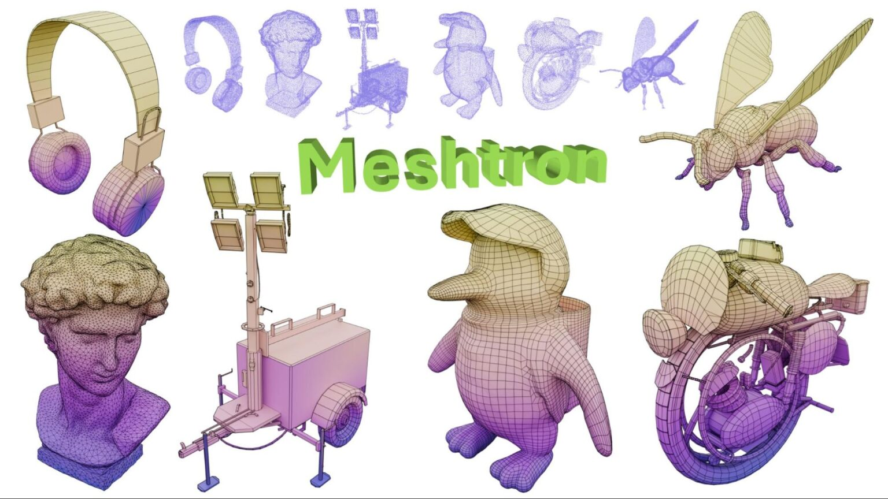

Large Language Models (LLMs): Advanced models like GPT-4, Claude 3, and Gemini that can understand, generate, and translate human language with remarkable fluency.
Widely used AI by the public:
Multimodal AI: Systems like Gemini that can process and understand information from multiple sources at once, such as text, images, and audio.
Generative AI:
Click to Reveal AI
Image Generation: Tools like Midjourney, DALL-E 3, and Stable Diffusion that create realistic or artistic images from text descriptions.
Click to Reveal AI
Video Generation: Emerging models like OpenAI's Sora and RunwayML that can create video clips from text prompts.
Click to Reveal AI
Code Generation: AI assistants like GitHub Copilot that write, suggest, and debug code.
Other AI applications
Protein Folding: DeepMind's AlphaFold, which accurately predicts the 3D structure of proteins, accelerating drug discovery.

3D mesh generation: Using AI such as NVIDIA's Meshtron to generate high-quality 3D triangle meshes from input images, text, or other 3D cues.
Autonomous Systems: Advancements in self-driving cars (e.g., Waymo), autonomous drones, and warehouse robotics.

AI Music: Running powerful AI models directly on personal devices like smartphones and laptops for improved privacy and speed.
History of AI
1950
The Turing Test
Alan Turing proposes a test for machine intelligence, a foundational concept for the field.
1956
The Dartmouth Workshop
The term "Artificial Intelligence" is coined by John McCarthy, and the field is formally established.
1950s-60s
Early AI Programs
Development of foundational programs like the Logic Theorist and the General Problem Solver.
1970s & 1980s
The "AI Winters"
Periods of reduced funding and interest due to overly optimistic predictions and limited computational power.
1980s
Rise of Expert Systems
AI programs designed to mimic the decision-making ability of a human expert in a specific domain.
1997
Deep Blue vs. Garry Kasparov
An IBM supercomputer defeats the world chess champion, a major milestone for machine intelligence.
2000s
The Rise of Machine Learning
A shift from rule-based systems to systems that learn from data.
2012
The ImageNet Breakthrough
A deep learning model called AlexNet dramatically outperforms all other methods in an image recognition competition.
2017
The Transformer Architecture
A new neural network architecture is introduced, becoming the foundation for most modern LLMs.
AI History Quiz
Question 1 of 2
Score: 0
Everyday Use of AI
Search Engine Ranking
One of the most common uses of AI in daily life is in search engines. For example, Google's search engine uses an AI system called RankBrain to help interpret user queries—even if they're vague or unfamiliar. It looks at past search patterns and user behavior to figure out what you're likely trying to find. This makes searching the web much faster and more accurate, especially when you're not sure exactly how to phrase your question.
Recommendation Systems
Have you ever wondered how YouTube always seems to know what video you want to watch next? Or how Netflix suggests shows you end up loving? That's AI at work. These platforms use machine learning algorithms to analyze your watch history, likes, skips, and even the time you spend on each title to recommend content that matches your interests. It's the reason your feed feels so personalized—and why you often end up watching or listening longer than you planned.
Navigation and Maps
Navigation apps like Google Maps or Waze also rely heavily on AI. They gather real-time data from millions of users to predict traffic, roadblocks, and travel times. AI helps these apps decide which routes are the fastest or least congested at that very moment. Whether you're driving to work, ordering a delivery, or navigating in a new city, AI makes sure you're not stuck in traffic more than you have to be.
Raining cats game
Rules:
Collect the real cats before they leave the screen
Avoid the AI cats
Score: 0
AI in Healthcare and Research
Healthcare Revolution
AI is transforming medicine by analyzing medical images (X-rays, MRIs) to detect diseases early, accelerating drug discovery, and enabling personalized treatment plans based on a patient's genetic profile.
Scientific Discovery
In research, AI models complex systems to tackle global challenges. It's used to forecast climate change impacts, discover new materials, and solve fundamental problems in physics and biology.
Industrial Automation
AI powers the next generation of robotics and logistics. From self-driving cars to intelligent robots in "smart factories," AI is optimizing supply chains and enhancing manufacturing efficiency.
Ethical Considerations & The Future
As AI becomes more powerful, we must address critical ethical questions to ensure it is developed and deployed responsibly for the benefit of all humanity.
- Bias and Fairness: Ensuring AI systems do not perpetuate or amplify human biases.
- Privacy: Protecting personal data from misuse in an AI-driven world.
- Accountability: Determining who is responsible when an AI system makes a mistake.
- Job Displacement: Managing the societal impact of AI automating human jobs.